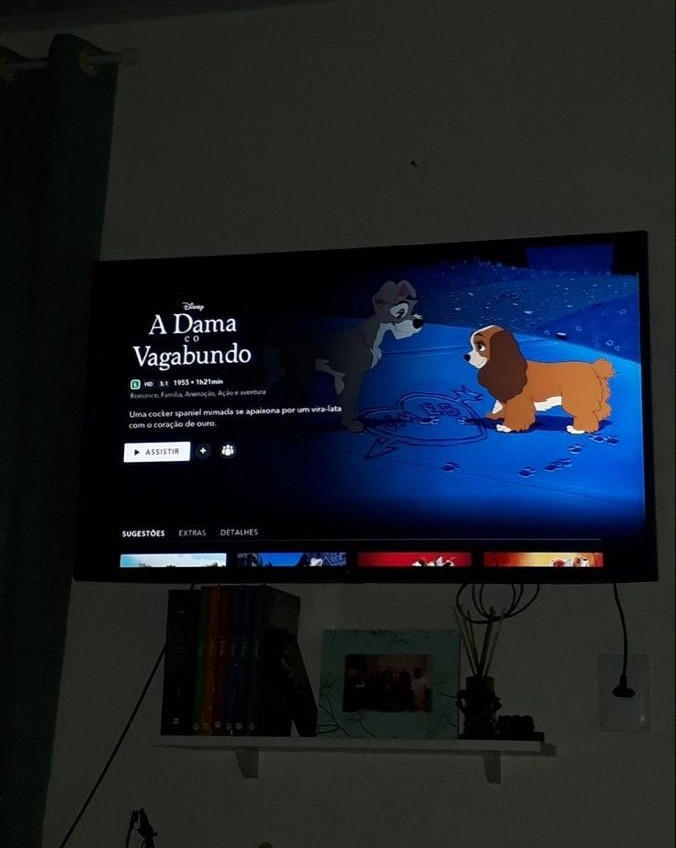
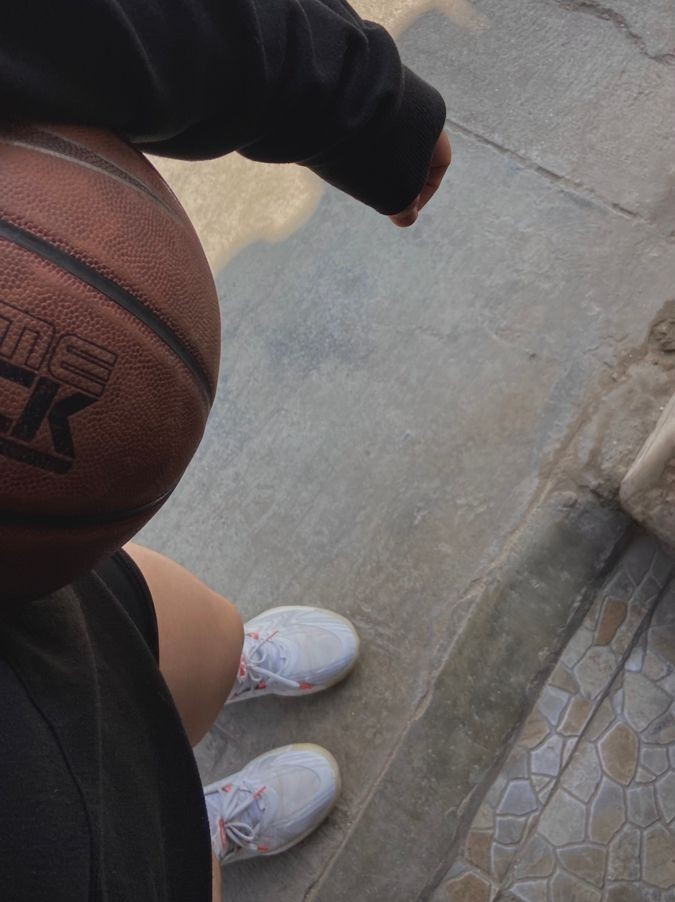

Mis gustos
Secar flores

Ver películas
Tomar fotos del cielo

Jugar básquet

Hacer postres y cocinar
Mi cantante favorito es la española Rosalía, me gusta tomar agua y amo las películas animadas. También amo los animales, especialmente los perros.